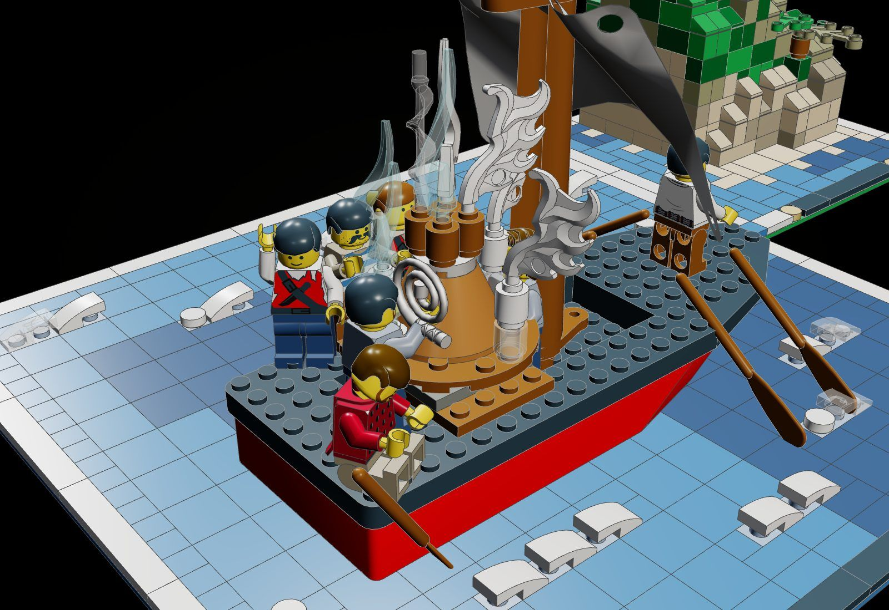
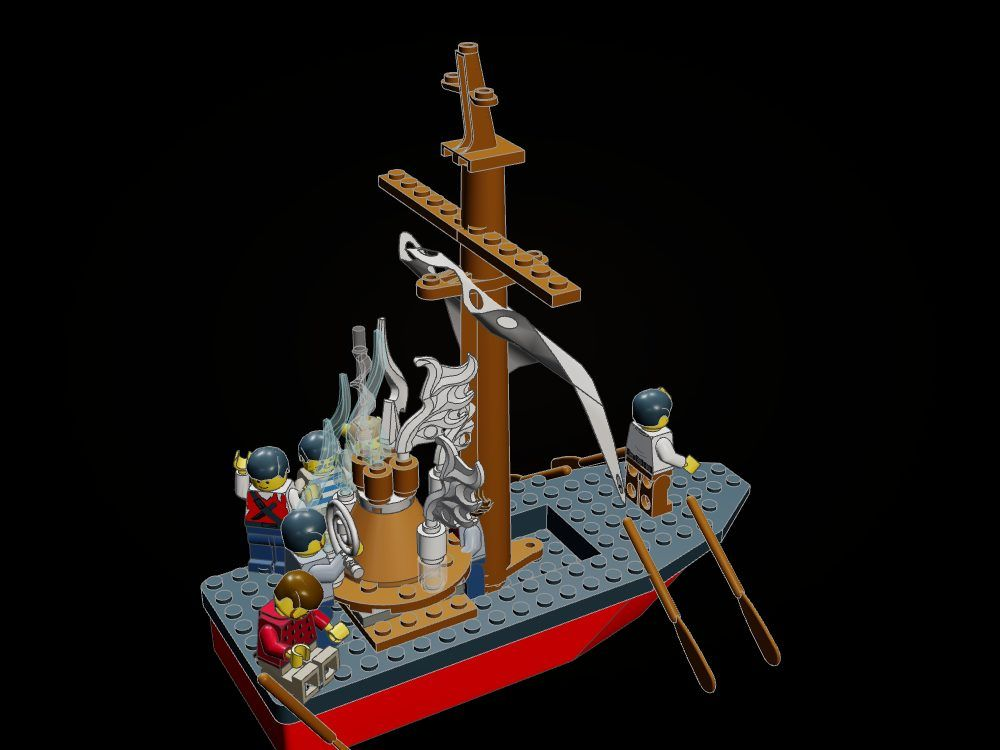
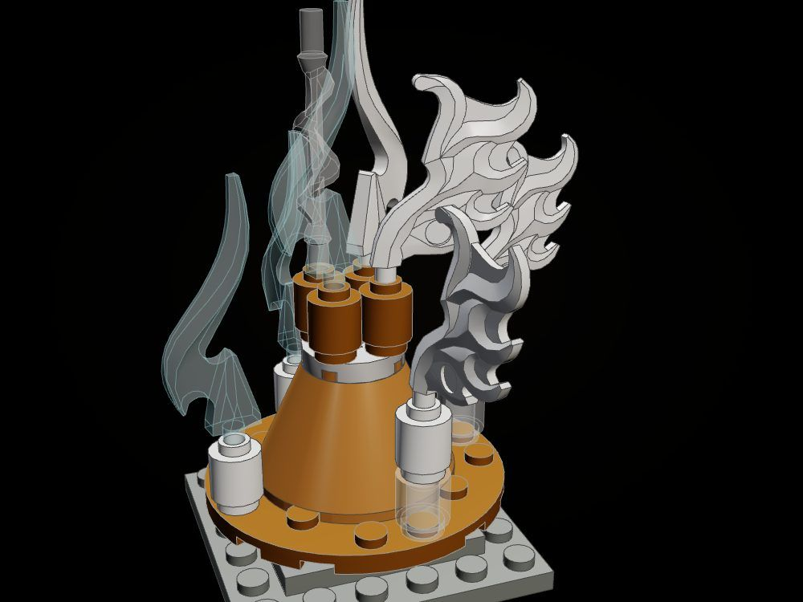
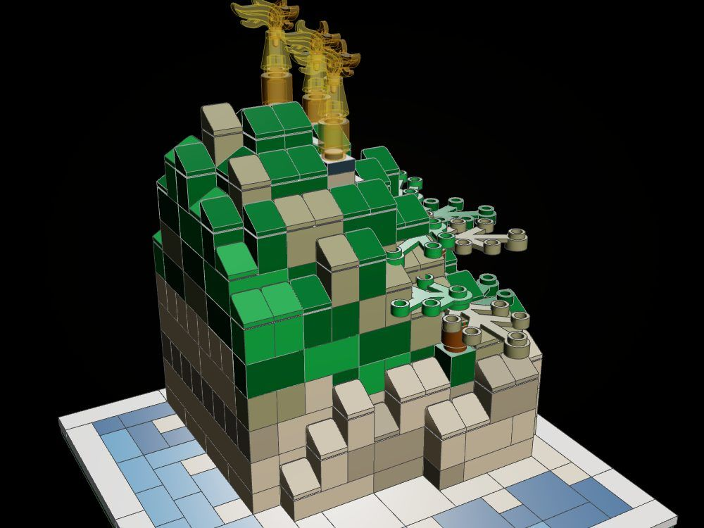

The Bag of Winds
Ten days out from Aeolia, with Ithaca so near the crew can see the watch-fires on its hill, Odysseus has fallen asleep at the steering oar, and his men, sure the ox-hide bag holds gold, loosen its silver cord: every wind in it bursts out at once.
"So they spoke, and the evil counsel of my comrades prevailed. They loosed the bag, and all the winds leapt forth." (Odyssey X, tr. A. T. Murray)

The object
The bag of winds: a fat ox-hide bag, its silver cord slipped, standing on a 4 x 4 turntable in the ship's hold with gusts of white and trans-clear bursting from its gaping neck and whirling round it on a 6 x 6 disc; spin the turntable and the winds wheel round the bag.

How it is built
- The ship is the line's galley, resting as its own root on a sea of tiles laid in patches of blue and dark blue over a 32 x 32 baseplate.
- White and trans-clear curved slopes on medium-blue plates make the crests of a sea already breaking under the loosed winds.
- The bag is a 4 x 4 cone of dark orange for the hide, a pearl-silver 2 x 2 round plate for the cord, and four round bricks for the gaping neck.
- A 4 x 4 turntable and a 6 x 6 round disc over the hold carry the bag and its gusts; the oars beside it are shipped so the disc turns clear.
- Odysseus sits asleep on the stern deck, head fallen forward, by the steering oar; the man who loosed the cord still holds it, coiled.
- Ithaca is a sculpted headland on its own 16 x 16 base, set ahead of the bow: tan and dark tan stone finished in cheese slopes and tiles, three watch-fires and olive trees on studs left for them.
- Both bases are finished in the line's white tile frame with a black and gold nameplate.
The builds inside the build

The ship and the bag
The galley with the plank over its hold, the bag on its turntable, six of the crew and Odysseus asleep.

The bag bursting
The play feature on its own: the bag, its slipped silver cord and the winds, on a turntable that spins them round.

Ithaca
The home the men could see and never reached: a headland with three watch-fires, a beach and olive trees.
What the checker says
| Build | File | Pieces | Loose | Clashes |
|---|---|---|---|---|
| The Bag of Winds (the ship on its sea, and Ithaca) | set.bag-of-winds | 867 | 0 | 0 |
| The ship, the crew and the bag | set.bag-of-winds-ship | 106 | 0 | 0 |
| The bag bursting, on its turntable | set.bag-of-winds-bag | 23 | 0 | 0 |
| Ithaca, with its watch-fires | set.bag-of-winds-ithaca | 403 | 0 | 0 |
In the film

Still to do
- The sail is the donor galley's fixed sail; it does not yet show the wind turning and driving the ship back.
- Odysseus's sleep is shown by pose only (seated, head bowed); no closed-eye head print is used.
- The gusts on the disc stand on round bricks; a version with clips that swing up as the bag opens is not built.
- Figures and angled parts (the flames, the spiral, the oars) are placed by hand and are not checked by the click tool.